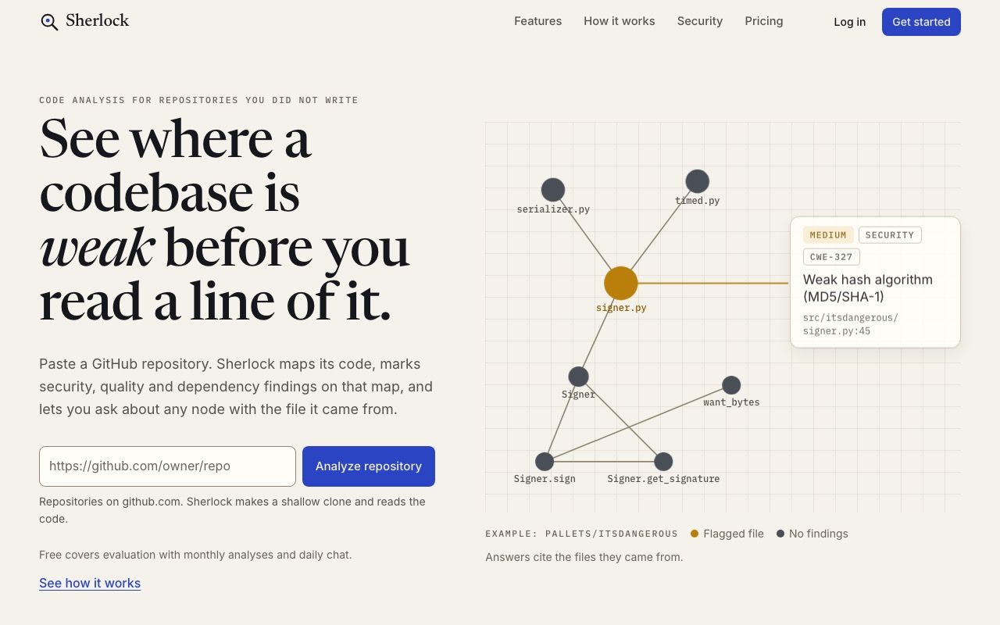
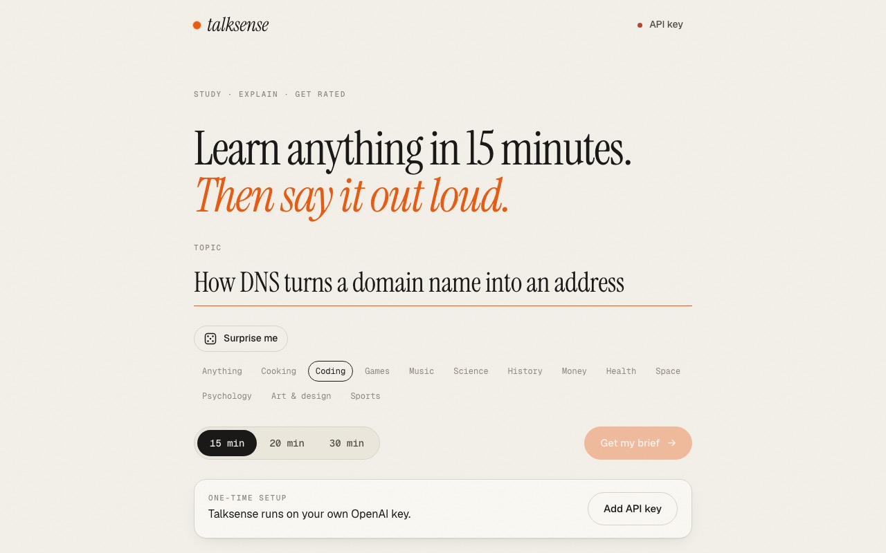
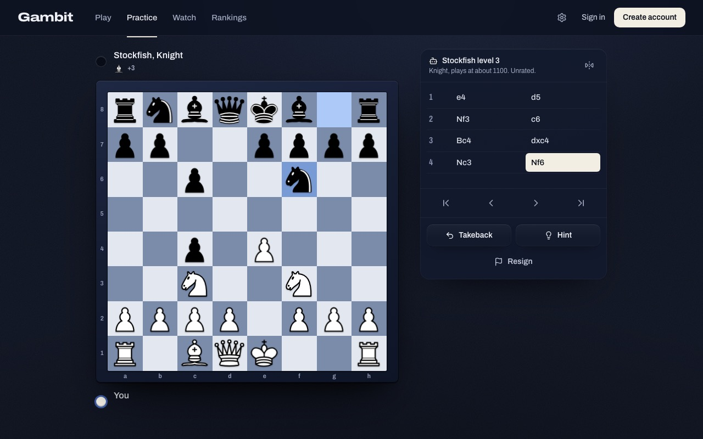
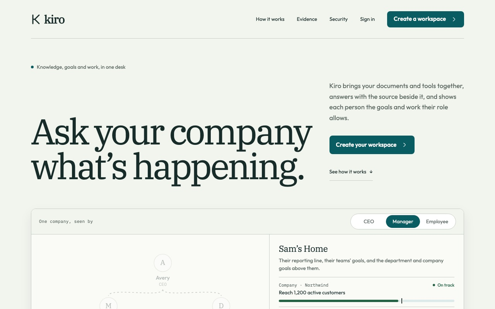
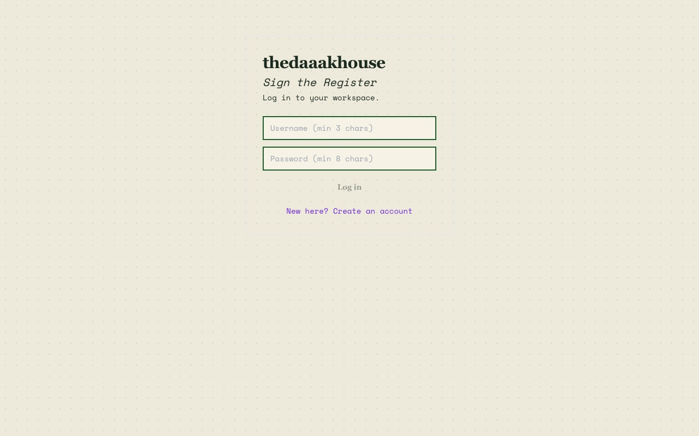
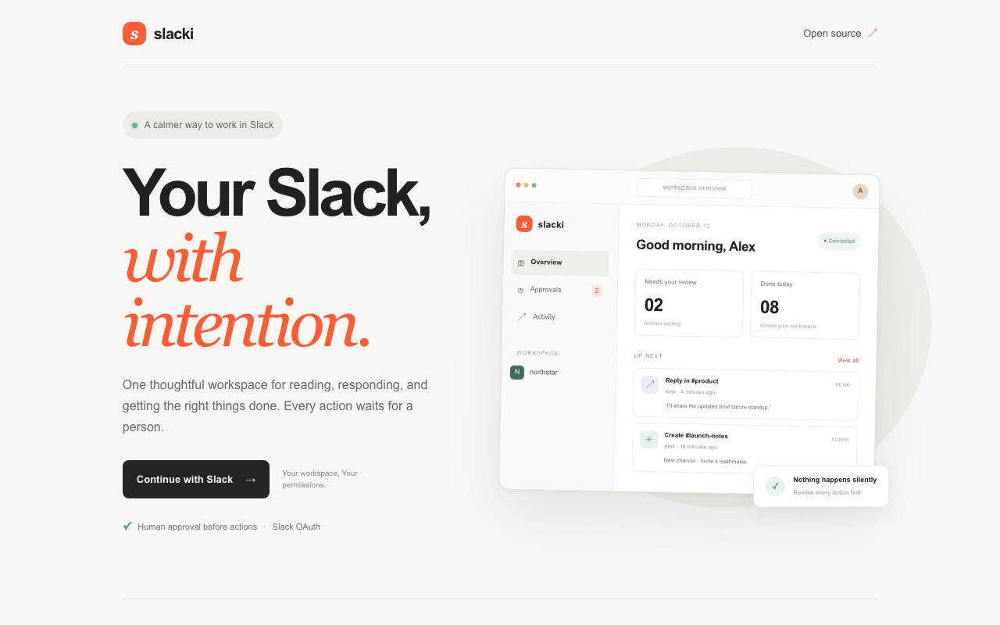

~/projects
Projects
12 things I’ve built, all of them live right now. Each one has a launch video, screens and notes on how it works.
 OrbitLedger
OrbitLedgerA crypto paper-trading workspace for BTC, ETH and SOL: real market data, virtual money.
● liveTypeScriptgithub.com/codealisha99/orbit-ledger
 Zentro
ZentroPeer-to-peer video calls in the browser. Share a link; no accounts, no downloads.
● liveTypeScriptgithub.com/codealisha99/zentro

SherlockSee where a codebase is weak before you read a line of it.
● livePythongithub.com/codealisha99/sherlock

TalkSenseLearn anything in 20 minutes, then prove it out loud.
● liveTypeScriptgithub.com/codealisha99/talksense
 Inference
InferenceOne model registry and inference API, implemented four times behind a single HTTP contract.
● livePythongithub.com/codealisha99/ai-inference-layer
 SchemaGuard
SchemaGuardTurn messy LLM output into validated JSON, and see every repair it made.
● livePythongithub.com/codealisha99/schemaguard
 ModelLab
ModelLabA small developer lab for simulated training, ranked memory and resumable token streams.
● livePythongithub.com/codealisha99/modellab

GambitMultiplayer chess with clocks the server keeps honest, plus offline play against Stockfish.
● liveTypeScriptgithub.com/codealisha99/chessandwhatever

KiroA company knowledge desk that only answers with what you're allowed to see.
● liveNext.jsgithub.com/codealisha99/kiro
 t0code
t0codeA local workspace for coding agents: in the browser, the terminal or the desktop.
● liveTypeScriptgithub.com/codealisha99/t0code

thedaaakhouseA job-search operating system: track applications, tailor résumés, prepare for interviews.
● liveNext.jsgithub.com/codealisha99/thedaaakhouse

SlackiYour Slack, with intention: every action waits for a person to approve it.
● liveTypeScriptgithub.com/codealisha99/slacki